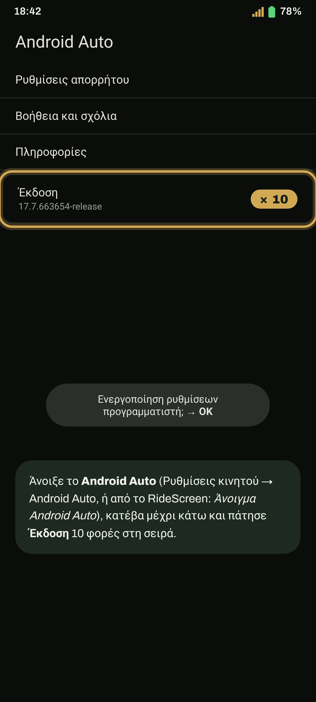
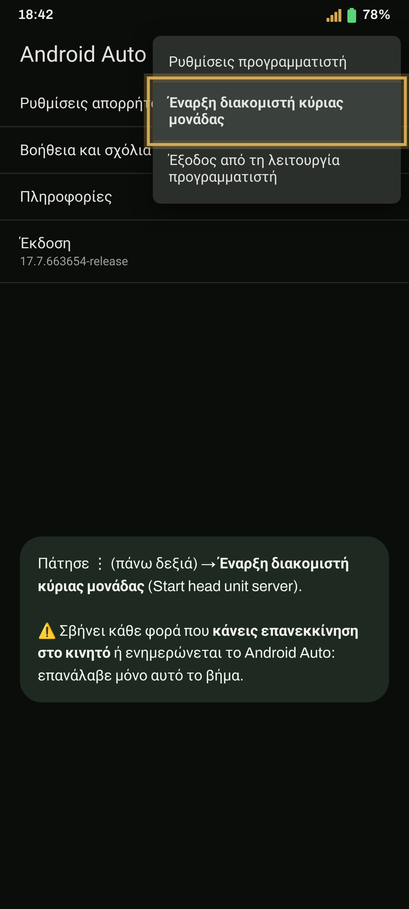
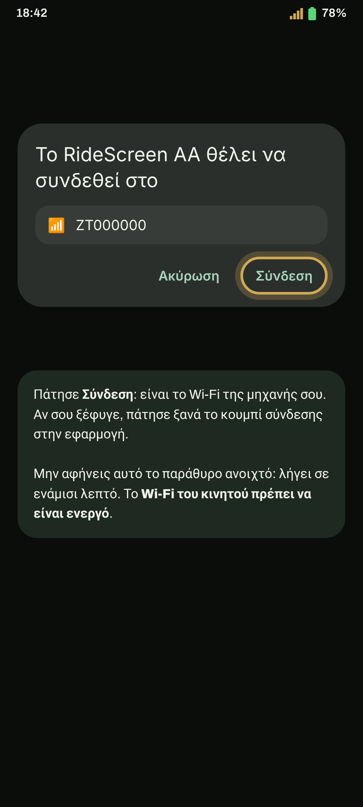
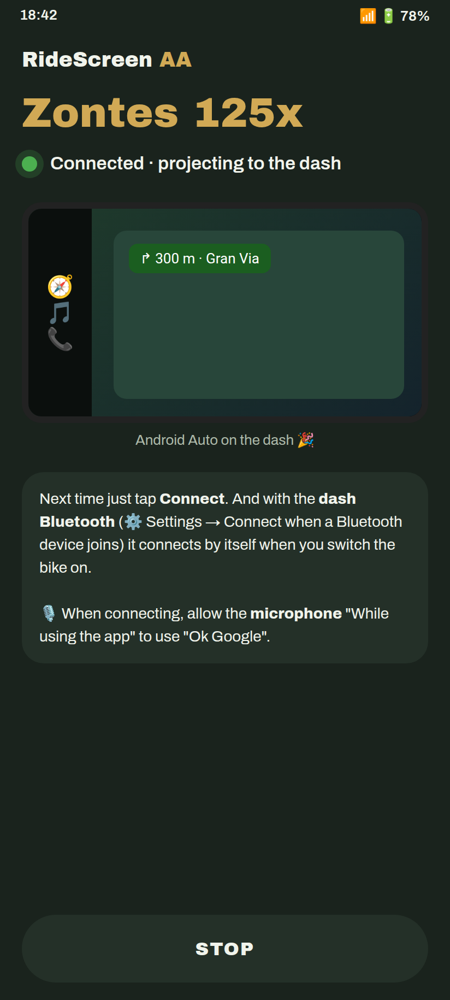

Εγκατάσταση και σύνδεση σε 10 λεπτά
Android Auto στην οθόνη της Zontes σου, βήμα προς βήμα. Η πρώτη σύνδεση χρειάζεται λίγα λεπτά· μετά αρκεί ένα πάτημα ή κανένα.
Έχεις ρολόι Wear OS; Συνέχισε με τον οδηγό ρολογιού στη συνέχεια.
- Τηλέφωνο Android 10 ή νεότερο, 64-bit (σχεδόν οποιοδήποτε μοντέλο των τελευταίων 5 ετών).
- Το Android Auto εγκατεστημένο και ενημερωμένο από το Play Store. Άνοιξέ το μία φορά και αποδέξου τους όρους.
- Το Wi‑Fi του τηλεφώνου ενεργοποιημένο. Δεν χρειάζεται να είσαι συνδεδεμένος σε κάποιο δίκτυο.
- Αν έχεις την επίσημη εφαρμογή της μοτοσικλέτας (Zontes / EasyConnection / Carbit), κλείσ’ την: Ρυθμίσεις → Εφαρμογές → η συγκεκριμένη εφαρμογή → Αναγκαστική διακοπή.
- Η μοτοσικλέτα πρέπει να είναι αναμμένη και σταθμευμένη για την πρώτη σύζευξη.
Εγκατάσταση της εφαρμογής
-
Λήψη του APK για το τηλέφωνο
Πάτησε το κουμπί: γίνεται απευθείας λήψη της τελευταίας έκδοσης (RideScreen-AA-v2.3.apk ή της εκάστοτε τρέχουσας έκδοσης).
Λήψη APKΠροτιμάς το GitHub; Στη σελίδα της τελευταίας έκδοσης, στην ενότητα Assetsπάτησε το APK που αρχίζει με RideScreen-AA-v.
Μην κατεβάσεις το αρχείο με την ένδειξη WearOS-reloj: είναι για το ρολόι και στο τηλέφωνο εμφανίζει το μήνυμα «το πακέτο φαίνεται μη έγκυρο».
-
Να επιτρέπονται εγκαταστάσεις από το πρόγραμμα περιήγησης
Άνοιξε το αρχείο που κατέβηκε. Αν το Android πει ότι δεν επιτρέπεται η εγκατάσταση εφαρμογών από αυτήν την πηγή, πάτησε Ρυθμίσεις, ενεργοποίησε Να επιτρέπεται από αυτήν την πηγή και επέστρεψε.
Στη συνέχεια πάτησε Εγκατάσταση.

-
Αν εμφανιστεί το Play Protect, συνέχισε την εγκατάσταση
Εμφανίζεται επειδή η εφαρμογή δεν βρίσκεται ακόμη στο Play Store. Πάτησε Περισσότερες λεπτομέρειες και μετά Εγκατάσταση ούτως ή άλλως.
Αν πατήσεις OK η εγκατάσταση ακυρώνεται. Μπορείς να επαναλάβεις ανοίγοντας ξανά το APK.
-
Άνοιξε το RideScreen και αποδέξου τα δικαιώματα
Την πρώτη φορά ανοίγουν οι Ρυθμίσεις. Αποδέξου όλα τα δικαιώματα που ζητούνται ή πάτησε Όλα παραχωρημένα για να τα ελέγξεις όλα μαζί.
Το Android απαιτεί πρόσβαση στην τοποθεσία για τη σύνδεση στο Wi‑Fi της μοτοσικλέτας και για την αποθήκευση των διαδρομών σου. Η εφαρμογή δεν σε παρακολουθεί.

Ρύθμιση Android Auto
-
Ενεργοποίηση λειτουργίας προγραμματιστή
Άνοιξε τις ρυθμίσεις του Android Auto (Ρυθμίσεις τηλεφώνου → Android Auto ή μέσα από το RideScreen). Κάνε κύλιση στο κάτω μέρος και πάτησε Έκδοση 10 φορές διαδοχικά. Αποδέξου την προειδοποίηση.
Αυτό χρειάζεται να γίνει μόνο μία φορά.

-
Εκκίνηση διακομιστή κεντρικής μονάδας
Στην ίδια οθόνη πάτησε ⋮ (επάνω δεξιά) → Έναρξη διακομιστή κεντρικής μονάδας.
Αυτό είναι το βήμα που συχνότερα ξεχνιέται. Απενεργοποιείται κάθε φορά που επανεκκινείς το τηλέφωνο ή ενημερώνεται το Android Auto. Αν κάποια στιγμή δεν συνδέεται, επανάλαβε αυτό το βήμα.
Σύζευξη με τη μοτοσικλέτα
-
Σάρωση του QR στην οθόνη
Στην οθόνη της μοτοσικλέτας, επίλεξε τη διεπαφή προβολής οθόνης (οθόνη 3 στην 125X): την οθόνη προβολής του τηλεφώνου, όπου εμφανίζεται κωδικός QR. Στο RideScreen πάτησε Σάρωση (στο κάτω μέρος, στην ενότητα Περισσότερα) και στόχευσε τον κωδικό με την κάμερα.
Ο κωδικός QR στην ενότητα Πληροφορίες δεν είναι ο σωστός: σάρωσε εκείνον που εμφανίζεται στη διεπαφή προβολής οθόνης. Άφησε την οθόνη της μοτοσικλέτας σε αυτή τη λειτουργία όσο γίνεται η σύνδεση.
-
Αποδοχή του Wi‑Fi της μοτοσικλέτας
Πάτησε Σύνδεση στο RideScreen. Το Android θα σε ρωτήσει αν επιτρέπεις στην εφαρμογή να συνδεθεί στο Wi‑Fi της μοτοσικλέτας (το όνομα συνήθως ξεκινά από ZT…). Πάτησε Σύνδεση.
Κάνε γρήγορα: το αίτημα λήγει μετά από ενάμιση λεπτό. Αν το χάσεις, πάτησε ξανά Σύνδεση στην εφαρμογή.
-
Έτοιμο: Android Auto στην οθόνη
Σε λίγα δευτερόλεπτα το Android Auto εμφανίζεται στην οθόνη της μοτοσικλέτας. Μπορείς να βάλεις το τηλέφωνο στην τσέπη σου.
Την επόμενη φορά, αρκεί να πατήσεις Σύνδεση. Για να συνδέεται αυτόματα όταν ξεκινάς τη μοτοσικλέτα: ⚙️ Ρυθμίσεις → Σύνδεση όταν συνδέεται συσκευή Bluetooth → επίλεξε το Bluetooth της οθόνης (αρχίζει με «ZT») και ενεργοποίησε Εμφάνιση πάνω από άλλες εφαρμογές.
Συμβουλή: Αφού συνδεθείς, μπορείς να αλλάξεις τη λειτουργία της οθόνης σε άλλη διεπαφή για να βλέπεις το αρχικό ταμπλό. Η εφαρμογή παραμένει συνδεδεμένη και συνεχίζει να καταγράφει τη διαδρομή. Όταν επιστρέψεις στη διεπαφή προβολής, το Android Auto θα είναι αμέσως διαθέσιμο.
Την πρώτη φορά που συνδέεσαι, η εφαρμογή ζητά πρόσβαση στο μικρόφωνο: επίλεξε Κατά τη χρήση της εφαρμογής ώστε να χρησιμοποιείς το «Ok Google» και το πλήκτρο φωνητικών εντολών του intercom.

Τι σημαίνουν τα μηνύματα της εφαρμογής και τι να κάνεις
«Η εφαρμογή δεν εγκαταστάθηκε» / «το πακέτο φαίνεται μη έγκυρο»Κατά την εγκατάσταση του APK
- Βεβαιώσου ότι κατέβασες το αρχείο RideScreen-AA-v….apk και όχι το APK του ρολογιού (WearOS-reloj).
- Αν η λήψη διακόπηκε, το αρχείο έχει αλλοιωθεί: διέγραψέ το και κατέβασέ το ξανά με καλή σύνδεση.
- Αν αναφέρει «μη συμβατό», το τηλέφωνό σου είναι 32-bit ή χρησιμοποιεί Android 9 ή παλαιότερο. Πες μας το μοντέλο του τηλεφώνου σου.
- Αν είχες εγκαταστήσει την επίσημη έκδοση του OpenCfMoto από τον Alexandru, απεγκατάστησέ την πρώτα: οι δύο εφαρμογές έχουν διαφορετικές ψηφιακές υπογραφές.
«Έγκριση Wi‑Fi τηλεφώνου / επιλογέα συσκευής…»Κατά τη σύνδεση
- Το αίτημα Wi‑Fi της μοτοσικλέτας εμφανίστηκε αλλά δεν εγκρίθηκε εγκαίρως. Πάτησε ξανά Σύνδεση και αποδέξου το αμέσως.
- Αν το αίτημα δεν εμφανίζεται, η μοτοσικλέτα πρέπει να είναι αναμμένη και κοντά σου, με την οθόνη στη διεπαφή προβολής.
- Αν εμφανίζεται αλλά δεν συνδέεται, έλεγξε ότι σάρωσες το QR της διεπαφής προβολής και όχι εκείνο των Πληροφοριών. Αν δεν είσαι σίγουρος, σάρωσέ το ξανά.
«Παραχώρησε δικαίωμα Κοντινές συσκευές / Bluetooth και πάτησε ξανά Σύνδεση»Κατά τη σύνδεση
- Το δικαίωμα Κοντινές συσκευές λείπει. Το Android το απαιτεί για τη σύνδεση στο Wi-Fi και το Bluetooth της μοτοσικλέτας.
- Ρυθμίσεις τηλεφώνου → Εφαρμογές → RideScreen AA → Δικαιώματα → Κοντινές συσκευές → Να επιτρέπεται. Έπειτα πάτησε Σύνδεση.
«Το Wi-Fi του τηλεφώνου είναι απενεργοποιημένο»Κατά τη σύνδεση
Ενεργοποίησε το Wi-Fi στο τηλέφωνο. Δεν χρειάζεται να συνδεθείς σε κάποιο δίκτυο: η εφαρμογή θα συνδεθεί μόνη της στο δίκτυο της μοτοσικλέτας.
«Κλείσε την επίσημη εφαρμογή και συνδέσου ξανά»Κατά τη σύνδεση
Η επίσημη εφαρμογή της μοτοσικλέτας (Zontes / EasyConnection / Carbit) κρατά τη σύνδεση με την οθόνη. Ρυθμίσεις → Εφαρμογές → η συγκεκριμένη εφαρμογή → Αναγκαστική διακοπή, έπειτα πάτησε ξανά Σύνδεση. Αν δεν τη χρησιμοποιείς, η ευκολότερη λύση είναι να την απεγκαταστήσεις.
«Το Android Auto δεν συνδέθηκε» / συνδέεται και αποσυνδέεταιΤο Wi-Fi της μοτοσικλέτας συνδέθηκε, αλλά δεν εμφανίζεται το Android Auto
- Σχεδόν πάντα φταίει ο διακομιστής κεντρικής μονάδας (βήμα 6): η εφαρμογή εμφανίζει ειδοποίηση με κουμπί Άνοιγμα Android Auto Εκεί, ⋮ → Διακοπή διακομιστή κεντρικής μονάδας και μετά επανεκκίνησέ τον (ακόμη κι αν φαινόταν ενεργός, μερικές φορές κολλάει).
- Μετά από κάθε επανεκκίνηση του τηλεφώνου, πρέπει να τον ξεκινάς ξανά.
- Μην απεγκαθιστάς ενημερώσεις του Android Auto: δεν χρειάζεται και μπορεί να χειροτερέψει τα πράγματα.
Συνδέεται την πρώτη φορά αλλά όχι μετά την επανεκκίνηση της μοτοσικλέταςΜετά το σβήσιμο και την επανεκκίνηση
- Όταν ξεκινάς, βάλε την οθόνη στη διεπαφή προβολής οθόνης και περίμενε περίπου 20–30 δευτερόλεπτα: η εφαρμογή θα εντοπίσει μόνη της τη μοτοσικλέτα.
- Αν ακόμη δεν εμφανίζεται εικόνα, πάτησε Διακοπή και μετά Σύνδεση στο RideScreen.
- Αν στο μεταξύ έχεις επανεκκινήσει το τηλέφωνο, ξεκίνα πρώτα τον διακομιστή κεντρικής μονάδας (βήμα 6).
Θέλω να δω το αρχικό ταμπλό χωρίς αποσύνδεσηΆλλες διεπαφές
- Συνδέσου πάντα από τη διεπαφή προβολής οθόνης (οθόνη 3 στην 125X): είναι η μόνη που ενεργοποιεί το Wi-Fi της οθόνης. Αν προσπαθήσεις από άλλη, η εφαρμογή θα αναφέρει ότι δεν βρίσκει το Wi-Fi της μοτοσικλέτας.
- Όταν εμφανιστεί το Android Auto, μπορείς να αλλάξεις σε άλλη διεπαφή όποτε θέλεις: η εφαρμογή παραμένει συνδεδεμένη, καταγράφει τη διαδρομή και το Android Auto συνεχίζει να λειτουργεί στο παρασκήνιο.
- Επέστρεψε στη διεπαφή προβολής και το Android Auto θα εμφανιστεί αμέσως, χωρίς νέα σύνδεση.
Κανένα από τα παραπάνωΠώς να ζητήσεις βοήθεια
Στο RideScreen πάτησε ❓ Βοήθεια → Κοινή χρήση αρχείων καταγραφής αμέσως μετά την αποτυχία και στείλε τα στην ομάδα αναφέροντας το μοντέλο της μοτοσικλέτας και του τηλεφώνου σου. Τα αρχεία καταγραφής δεν περιέχουν κωδικούς πρόσβασης ή σειριακούς αριθμούς.
Το RideScreen AA είναι δωρεάν λογισμικό ανοικτού κώδικα, βασισμένο στο OpenCfMoto του Alexandru (zanderp). Δεν είναι επίσημη εφαρμογή της Zontes. Τα στιγμιότυπα είναι ενδεικτικά· οι ακριβείς ονομασίες ρυθμίσεων μπορεί να διαφέρουν ανάλογα με το τηλέφωνο.